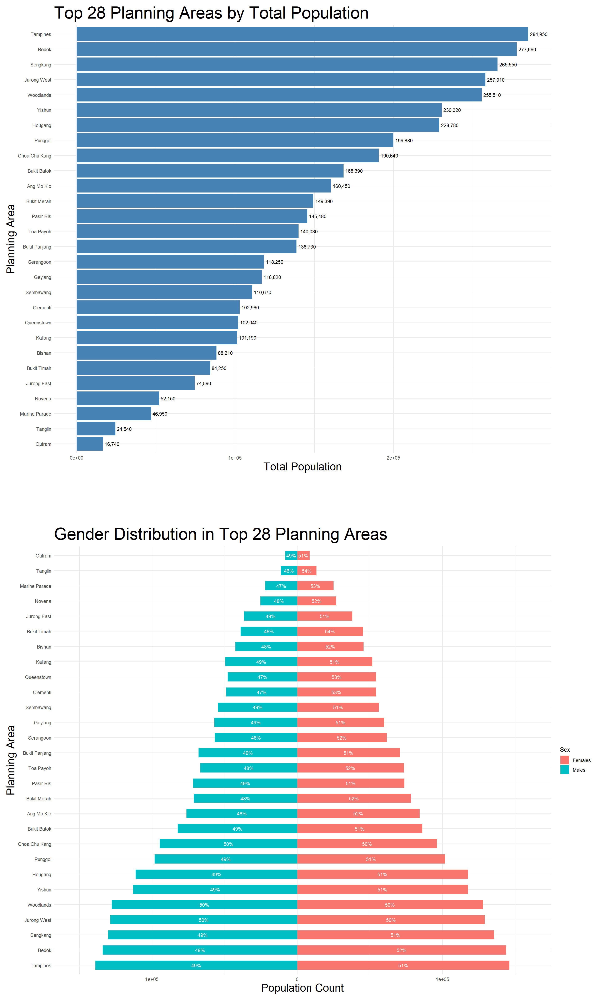
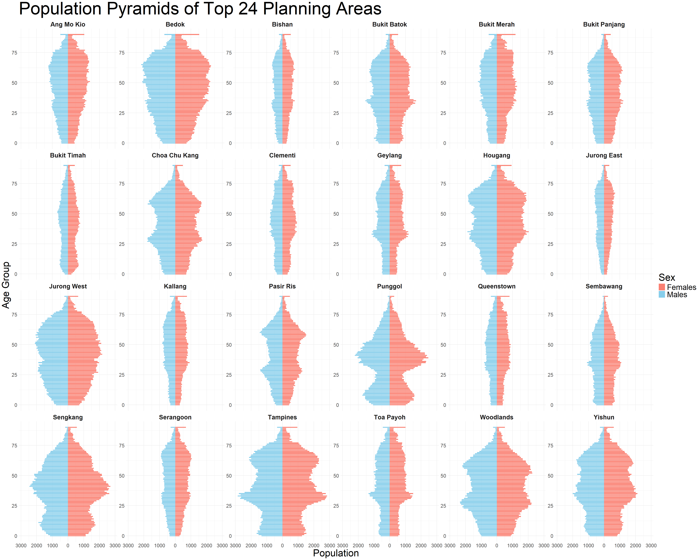
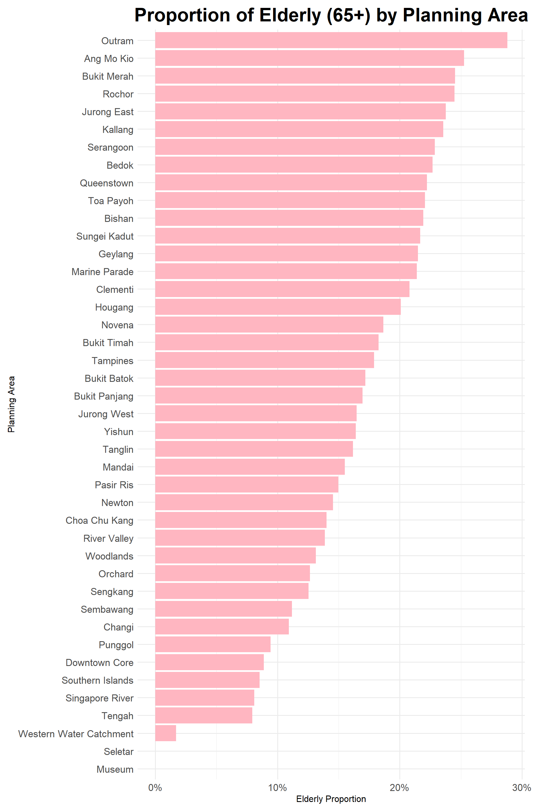
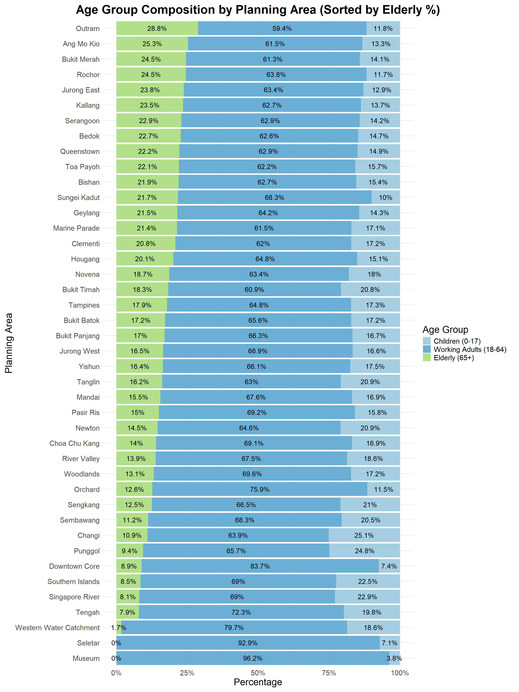

pacman::p_load(dplyr, patchwork, tidyverse, scales, forcasts)Take-home_Ex01
This is the Take-home Exercise 1
1. Overview
This Quarto document supports a data-driven article by a local online media company that aims to investigate Singapore’s demographic structure and distribution in 2024. The analysis uses official population statistics to highlight the top 28 planning areas (PAs) with the highest total resident population in a bar chart, followed by a diverging gender distribution define that clearly shows the male-to-female ratio in these locations. Furthermore, the report includes population pyramids for the top 24 most populated PAs, which illustrate age distribution patterns across sexes. These pyramids are especially useful for detecting places with aging populations, as evidenced by wider age bands at the upper age levels. In addition to supporting the media company’s upcoming article with clear, appealing visuals, the visualizations collectively offer a thorough overview of where people live, how the population is divided by gender, and which regions may experience demographic shifts related to aging. These are important insights that can guide public discourse and policymaking.
2. Data Preparation
In order to prepare the data for precise analysis and visualization, this process involves cleaning the data by eliminating duplicates and missing values, recoding age values, and converting important variables to the proper formats.
2.1 Loading Packages
We load the following R packages using the pacman::p_load() function:
tidyverse – Core collection of R packages designed for data science
dplyr – For data manipulation and transformation.
patchwork – To combine multiple ggplot2 plots into a single layout.
scales – For formatting axes and labels (e.g., commas, percentages).
forcats – For working with categorical/factor variables.
2.2 Importing Data
sg_res <- read.csv("data/respopagesex2024.csv")This is the description of the data:
| Column Name | Description | Data Type |
|---|---|---|
| PA | Planning Area (e.g., Tampines, Woodlands, etc.) | Categorical |
| Age | Age group (e.g., “0”, “5”, …, “90+”, typically in 5-year bins) | Ordinal (Factor or Integer) |
| Sex | Gender category: “Males” or “Females” | Categorical |
| Pop | Population count for the given PA, age group, and sex | Numeric (Integer) |
2.3 Data Pre Processing
This section involved cleaning and formatting the dataset by removing duplicates and missing values, converting the “90_and_Over” age group to numeric, and converting key variables like age, sex, and planning area into appropriate data types for analysis.
2.3.1 Check and Drop Duplicates
sg_res <- sg_res %>%
distinct()2.3.2 Check and Drop NAs
sg_res <- sg_res %>%
mutate(
Age = ifelse(Age == "90_and_Over", "90", Age),
Age = as.numeric(Age),
PA = as.factor(PA),
SZ = as.factor(SZ),
Sex = as.factor(Sex),
Time = as.integer(Time)
) %>%
drop_na()3. Visualisation
3.1 Population and Gender Distribution in Top 28 Planning Areas
This section visualizes the top 28 planning areas (PAs) in Singapore based on their total population. The first bar chart ranks these areas, revealing that Tampines, Bedok, and Sengkang are the most populous, each with over 265,000 residents. These areas are key residential hubs and likely experience high demand for infrastructure and services.
The second plot is a diverging bar chart that shows the gender distribution within each of these top 28 PAs. The proportions of males and females are nearly balanced across most regions, with slight variations. For example, Bukit Merah, Tanglin and Queenstown have a noticeably higher female percentage (around 53–54%), while areas like Choa Chu Kang and Woodlands show an exact or near-equal male-female split (50-50%).
These visualizations provide a clear demographic snapshot—highlighting not only which areas are most densely populated, but also offering insights into gender balance, which can influence local policies, healthcare planning, and community programs.
3.1.1 Top 28 Planning Areas by Total Population
top28_pa_pop <- sg_res %>%
group_by(PA) %>%
summarise(TotalPop = sum(Pop), .groups = "drop") %>%
arrange(desc(TotalPop)) %>%
slice_head(n = 28)
total_pop_by_pa <- ggplot(top28_pa_pop, aes(x = TotalPop, y = fct_reorder(PA, TotalPop))) +
geom_col(fill = "steelblue") +
geom_text(aes(label = scales::comma(TotalPop)), hjust = -0.1, size = 3)+
labs(
title = "Top 28 Planning Areas by Total Population",
x = "Total Population",
y = "Planning Area"
) +
theme_minimal()+
theme(axis.title.x = element_text(size = 20),
axis.title.y = element_text(size = 20),
plot.title = element_text(size = 30))3.1.2 Gender Distribution in Top 28 Planning Areas
pop_sex_dist <- sg_res %>%
filter(PA %in% top28_pa_pop$PA) %>%
group_by(PA, Sex) %>%
summarise(Pop = sum(Pop), .groups = "drop") %>%
group_by(PA) %>%
mutate(
Total = sum(Pop),
Percent = Pop / Total,
Pop_signed = ifelse(Sex == "Males", -Pop, Pop),
Percent_label = paste0(round(Percent * 100), "%")
) %>%
ungroup()
pop_sex_dist$PA <- factor(pop_sex_dist$PA, levels = top28_pa_pop$PA)
sex_of_pop_by_pa <- ggplot(pop_sex_dist, aes(x = Pop_signed, y = PA, fill = Sex)) +
geom_col(width = 0.6) +
geom_text(aes(label = Percent_label),
position = position_stack(vjust = 0.5),
size = 3.2, color = "white") +
scale_x_continuous(
labels = abs,
expand = expansion(mult = c(0.1, 0.1))
) +
labs(
title = "Gender Distribution in Top 28 Planning Areas",
x = "Population Count",
y = "Planning Area"
) +
theme_minimal() +
theme(axis.title.x = element_text(size = 20),
axis.title.y = element_text(size = 20),
plot.title = element_text(size = 30))
scale_fill_manual(values = c("Males" = "#1f77b4", "Females" = "#ff7f0e"))<ggproto object: Class ScaleDiscrete, Scale, gg>
aesthetics: fill
axis_order: function
break_info: function
break_positions: function
breaks: waiver
call: call
clone: function
dimension: function
drop: TRUE
expand: waiver
get_breaks: function
get_breaks_minor: function
get_labels: function
get_limits: function
get_transformation: function
guide: legend
is_discrete: function
is_empty: function
labels: waiver
limits: function
make_sec_title: function
make_title: function
map: function
map_df: function
n.breaks.cache: NULL
na.translate: TRUE
na.value: grey50
name: waiver
palette: function
palette.cache: NULL
position: left
range: environment
rescale: function
reset: function
train: function
train_df: function
transform: function
transform_df: function
super: <ggproto object: Class ScaleDiscrete, Scale, gg>3.1.3 Combining Two Plots
combine_plots <- total_pop_by_pa / plot_spacer() / sex_of_pop_by_pa +
plot_layout(heights = c(1, 0.1, 1))
combine_plots
3.2 Age Pyramid of Top 24 Planning Areas
This section presents population pyramids for the top 24 planning areas (PAs) in Singapore, offering a detailed view of age and gender distribution within each region. Each pyramid plots the male population on the left and female population on the right across single-year age groups, allowing for the identification of demographic trends such as youth-dominant or aging populations.
From the visualizations, areas like Woodlands, Tampines, Sengkang, and Punggol show relatively balanced and broad bases, indicating a younger population with strong representation in the working-age and child demographics. In contrast, areas like Bukit Timah, Queenstown, and Bukit Merah display narrower bases and wider upper sections, and giving a signal of an aging population with a higher proportion of elderly residents.
These insights are crucial for urban planning, healthcare provisioning, and policymaking, as they highlight the varying age structures and potential future needs of each planning area.
# Filter out the top 24 PA that has the highest population
top_24_pas <- sg_res %>%
group_by(PA) %>%
summarise(Total = sum(Pop), .groups = "drop") %>%
slice_max(order_by = Total, n = 24) %>%
pull(PA)
pyramid_data_top24 <- sg_res %>%
filter(PA %in% top_24_pas) %>%
group_by(PA, Age, Sex) %>%
summarise(Pop = sum(Pop), .groups = "drop") %>%
mutate(Pop = ifelse(Sex == "Males", -Pop, Pop))
ggplot(pyramid_data_top24, aes(x = Age, y = Pop, fill = Sex)) +
geom_bar(stat = "identity", width = 0.8) +
coord_flip() +
scale_y_continuous(labels = abs) +
facet_wrap(~ PA, scales = "free_y", ncol = 6) + # 6 columns for layout
labs(title = "Population Pyramids of Top 24 Planning Areas",
x = "Age Group", y = "Population") +
theme_minimal(base_size = 9) +
theme(axis.title.x = element_text(size = 25),
axis.title.y = element_text(size = 25),
plot.title = element_text(size = 35)) +
scale_fill_manual(values = c("Males" = "skyblue", "Females" = "salmon"))
4. Summary
With an emphasis on planning areas with the largest populations, this publication offers a thorough demographic estimate of Singapore’s resident population in 2024. The analysis uses systematic data preparation and effective visualization approaches to highlight the top 28 planning areas by total population and evaluate their gender distribution using diverging bar charts. Furthermore, the top 24 areas’ population pyramids provide information about the age distribution of each region, highlighting places with younger populations compared to those with aging populations. These visual aids are useful for influencing public discussions, urban planning, and policy formation; they are particularly useful for a local media article that aims to clarify Singapore’s changing demographics.
5. Phase II
5.1 Original Visualization
total_area <- sg_res %>%
group_by(PA) %>%
summarise(total = sum(Pop), .groups = "drop")
elderly <- sg_res %>%
filter(Age >= 65, !is.na(PA), !is.na(Pop))
elderly_area <- elderly %>%
group_by(PA) %>%
summarise(elderly = sum(Pop), .groups = "drop")
aging_ratio <- left_join(total_area, elderly_area, by = "PA") %>%
filter(total > 0) %>%
mutate(elderly = replace_na(elderly, 0),
aging_percentage = elderly / total)ggplot(aging_ratio, aes(x = reorder(PA, aging_percentage),
y = aging_percentage)) +
geom_col(fill = "lightpink") +
coord_flip() +
scale_y_continuous(labels = scales::percent_format(accuracy = 1)) +
labs(
title = "Proportion of Elderly (65+) by Planning Area",
x = "Planning Area",
y = "Elderly Proportion"
) +
theme_minimal(base_size = 12) +
theme(axis.text.y = element_text(size = 13),
axis.text.x = element_text(size = 13),
plot.title = element_text(size = 25, face = "bold",
hjust =0.5),
plot.margin = margin(10, 20, 10, 10))
5.2 Good Points of the Visualization
Good Points of the Visualization
Clear Sorting for Comparison
The planning areas are sorted in descending order of elderly proportion, which helps the viewer quickly identify the areas with the highest elderly population share.
Sorting enhances readability and supports effective ranking-based insights.
Simple and Clean Design
The chart uses a horizontal bar layout with clean axis labels and a minimal theme.
This layout makes it easy to read long planning area names and compare bar lengths visually.
Focused Message
The title, “Proportion of Elderly (65+) by Planning Area,” is specific and directly tells the viewer what to focus on.
The single-variable focus avoids visual clutter and keeps the viewer’s attention on a key demographic issue.
5.3 Areas for further Improvement
Areas for Further Improvement
- Lack of Context from Other Age Groups
The chart shows only the elderly proportion, which may mislead viewers if other age groups are significant in total composition.
There’s no insight into whether the area also has many children or working adults — a stacked comparison could give more complete demographic context.
- Missing Data Labels
The chart does not show the actual percentage values on the bars, requiring viewers to estimate from the axis grid.
Adding data labels (e.g., “23.5%”) improves precision and saves interpretation time.
5.4 Makeover Version of the data visualization
sg_age_grouped <- sg_res %>%
mutate(age_group = case_when(
Age >= 65 ~ "Elderly",
Age >= 24 ~ "Working Adults",
TRUE ~ "Children"
))
pop_by_group <- sg_age_grouped %>%
group_by(PA, age_group) %>%
summarise(Pop = sum(Pop), .groups = "drop")
pop_percent <- pop_by_group %>%
group_by(PA) %>%
mutate(total = sum(Pop),
percent = Pop / total) %>%
ungroup() %>%
filter(total > 0)
elderly_percent <- pop_percent %>%
filter(age_group == "Elderly") %>%
select(PA, elderly_percent = percent)
pop_percent <- left_join(pop_percent, elderly_percent, by = "PA") %>%
mutate(
PA = fct_reorder(PA, +elderly_percent),
percent_label = paste0(round(percent * 100, 1), "%")
)
pop_percent$age_group <- factor(pop_percent$age_group,
levels = c("Children", "Working Adults", "Elderly"))
ggplot(pop_percent, aes(x = PA, y = percent, fill = age_group)) +
geom_col() +
geom_text(aes(label = percent_label),
position = position_stack(vjust = 0.5),
size = 5, color = "black") +
scale_y_continuous(labels = percent_format(accuracy = 1)) +
scale_fill_manual(values = c("Elderly" = "#b2df8a",
"Working Adults" = "#6baed6",
"Children" = "#a6cee3")) +
coord_flip() +
labs(
title = "Age Group Composition by Planning Area (Sorted by Elderly %)",
x = "Planning Area",
y = "Percentage",
fill = "Age Group"
) +
theme_minimal(base_size = 12) +
theme(axis.text.y = element_text(size = 15),
axis.text.x = element_text(size = 15),
axis.title.x = element_text(size = 20),
axis.title.y = element_text(size = 20),
legend.title = element_text(size = 20),
legend.text = element_text(size = 15),
plot.title = element_text(size = 25, face = "bold",
hjust =0.5),
plot.margin = margin(10, 20, 10, 10))
Improvements
- Adds Complete Age Context
- Instead of showing only elderly proportion, this stacked bar chart displays Children, Working Adults, and Elderly, giving a holistic view of age distribution across planning areas.
- Sorts by Elderly Proportion
- Planning areas are ordered by increasing elderly percentage, making it easy to visually compare which areas are “older” in terms of demographic weight.
- Shows Data Labels
- Each bar segment includes a percentage label, improving accuracy and interpretability without requiring the viewer to estimate from the axis.
Advantages
Contextual Insight: You can immediately compare not just who has the most elderly, but how balanced or skewed each area’s population is across age groups.
Effective Communication: Better typography and labels make the visualization suitable for reports or presentations to decision-makers.
5. Reference
The Data Link: Singapore Residents by Planning Area / Subzone, Single Year of Age and Sex, June 2024